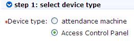
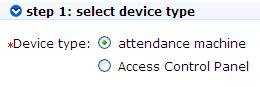
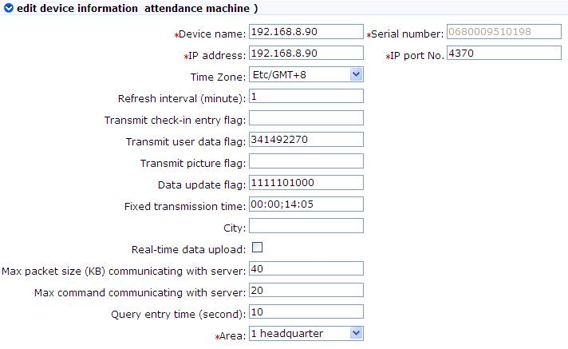

Device Management
Set the communication parameters of connected devices. Only when communication parameters, including system settings and device settings, are correct, normal communication with devices will be possible. When communication is successful, you can view the information of connected devices, and perform remote monitoring, uploading and downloading data.
The system supports access control and attendance system, so connecting devices includes add access control panel and add attendance recorder. To add access control panel, search and view devices connected to the network, and directly add from the searching result. For an attendance device having ADMS function, just set in the device and then connect to the network.
Add Access Control Panel
There are two way to add access control panel.
1. Add device:
(1) Click [Device] - [Device] - [Add] to show the device information edit interface. Select device type (access control panel) and click Next:
(2) Select access control panel to show the device information of device. The communication modes are TCP/ IP or RS485. The following interface will be shown:

(2) Select access control panel to show the device information of device. The communication modes are TCP/ IP or RS485. The following interface will be shown:
(1) Click [Device] - [Device] - [Add] to show the device information edit interface. The communication modes are TCP/ IP or RS485. The following interface will be shown:
TCP/ IP:
IP address: Please enter the IP address of the access control panel;
IP port No.: In Ethernet mode, the default is 4370;
IP port No.: In Ethernet mode, the default is 4370;
RS485:
Serial port number: COM1-COM254;
RS485 address: The machine number. When serial port numbers are the same, there will be no repeated 485 addresses;
Baud rate: Same as the baud rate of the device (9600/ 19200/ 38400/ 57600/115200). The default is 38400;
Device name: Any character, up to a combination of 20 characters;
Communication password: Any character, up to a combination of 15 characters (No blank). You need to input this field only when you add a new device with the communication password. It can’t be modify when you edit the device information except in [Modify communication password] operation. Please refer to Door Management.
Note: You need not input this field if the device has no communication password, such as it is new factory device or just after the initialization.
Panel type: One-door panel, two-door panel, four-door panel;
Switch to two-door two-way: When four-door panel is selected, this box will appear. By default, it is not ticked. The parameter is used to switch the four-door one-way access control panel to two-door two-way access control panel (For changes of extended device parameters before and after switching, see relevant files of access control panel).
Note: After the four door one-way access control panel is switched to two- door two-way access control panel, to switch back, you need delete the device from the system and add it again. When adding, do not tick the check box before this parameter.
Auto synchronize device time: By default it is ticked, namely, it will synchronize device time with server time each time connecting the device. If it is unchecked, the user can manually synchronize device time;
Area: Specify areas of devices. After area setting, devices (doors) can be filtered by area upon real-time monitoring.
(3)(2) After editing, click [OK], and the system will try connecting the current device:
If connection is successful, it will read corresponding extended parameters of the device. At this time, if the access control panel type selected by the user does not meet the corresponding parameters of the actual device, the system remind the user. If the user clicks [OK]to save, it will save the actual access control panel type of the device;
Extended device parameters: Serial number, device type, firmware version number, auxiliary input quantity, auxiliary output quantity, door quantity, and reader quantity.
If device connection fails, while the user still needs to add the device to the system, corresponding device parameters and extended parameters, such as serial number, will not be written into the system, and such settings as anti-passback and linkage will be impossible. These settings can be created only when the device is reconnected successfully and corresponding parameters are acquired.
Note: When you add a new device to the system, the software will clear all user information, timezones, holidays, and access control levels settings (includes access control group, anti-pass back, interlock settings, linkage settings, etc.) from the device, except the events record in the device. Unless the information in the device is unusable, we recommend you not to delete the device in used, to avoid the lost of information.
Access control panel settings:
TCP/ IP communication requirements:
Support and enable TCP/ IP communication, directly connect the device with PC or connect to the Internet, get the device IP address and other information of the device;
RS485 communication requirements:
Support and enable RS485 communication, connect to PC through RS485, get the serial port number, RS485 machine number (address), baud rate and other information of the device.
2. Add device by searching access control panels:
Search the access control panels in the Ethernet.
(1) Click [Device] - [Device] - [Search panels], to show the search interface;
(2) Click [Start search], and it will prompt [searching……];
(3) After searching, the list and total number of access control panels will be displayed;
(4) Click [Add to device list] behind the device, and the browser may pop up a security tip. Right-click to select [Window temporarily allowing script execution], click [Add to device list] behind the device again, and a dialog box will pop up. Enter self-defined device name, and click [OK] to complete device adding.
(5) The default IP address of the access control panel may conflict with the IP of a device on the Internet. You can modify its IP address: Click [Modify IP address] behind the device, and a dialog box will pop up. Enter the new IP address and communication password (If the device has a communication password, you must enter the correct communication password for successful modification. otherwise, you need not to enter it), and click [Confirm] to complete IP address modification;
RS485 address: The machine number. When serial port numbers are the same, there will be no repeated 485 addresses;
Baud rate: Same as the baud rate of the device (9600/ 19200/ 38400/ 57600/115200). The default is 38400;
Device name: Any character, up to a combination of 20 characters;
Communication password: Any character, up to a combination of 15 characters (No blank). You need to input this field only when you add a new device with the communication password. It can’t be modify when you edit the device information except in [Modify communication password] operation. Please refer to Door Management.
Note: You need not input this field if the device has no communication password, such as it is new factory device or just after the initialization.
Panel type: One-door panel, two-door panel, four-door panel;
Switch to two-door two-way: When four-door panel is selected, this box will appear. By default, it is not ticked. The parameter is used to switch the four-door one-way access control panel to two-door two-way access control panel (For changes of extended device parameters before and after switching, see relevant files of access control panel).
Note: After the four door one-way access control panel is switched to two- door two-way access control panel, to switch back, you need delete the device from the system and add it again. When adding, do not tick the check box before this parameter.
Auto synchronize device time: By default it is ticked, namely, it will synchronize device time with server time each time connecting the device. If it is unchecked, the user can manually synchronize device time;
Area: Specify areas of devices. After area setting, devices (doors) can be filtered by area upon real-time monitoring.
(3)(2) After editing, click [OK], and the system will try connecting the current device:
If connection is successful, it will read corresponding extended parameters of the device. At this time, if the access control panel type selected by the user does not meet the corresponding parameters of the actual device, the system remind the user. If the user clicks [OK]to save, it will save the actual access control panel type of the device;
Extended device parameters: Serial number, device type, firmware version number, auxiliary input quantity, auxiliary output quantity, door quantity, and reader quantity.
If device connection fails, while the user still needs to add the device to the system, corresponding device parameters and extended parameters, such as serial number, will not be written into the system, and such settings as anti-passback and linkage will be impossible. These settings can be created only when the device is reconnected successfully and corresponding parameters are acquired.
Note: When you add a new device to the system, the software will clear all user information, timezones, holidays, and access control levels settings (includes access control group, anti-pass back, interlock settings, linkage settings, etc.) from the device, except the events record in the device. Unless the information in the device is unusable, we recommend you not to delete the device in used, to avoid the lost of information.
Access control panel settings:
TCP/ IP communication requirements:
Support and enable TCP/ IP communication, directly connect the device with PC or connect to the Internet, get the device IP address and other information of the device;
RS485 communication requirements:
Support and enable RS485 communication, connect to PC through RS485, get the serial port number, RS485 machine number (address), baud rate and other information of the device.
2. Add device by searching access control panels:
Search the access control panels in the Ethernet.
(1) Click [Device] - [Device] - [Search panels], to show the search interface;
(2) Click [Start search], and it will prompt [searching……];
(3) After searching, the list and total number of access control panels will be displayed;
(4) Click [Add to device list] behind the device, and the browser may pop up a security tip. Right-click to select [Window temporarily allowing script execution], click [Add to device list] behind the device again, and a dialog box will pop up. Enter self-defined device name, and click [OK] to complete device adding.
(5) The default IP address of the access control panel may conflict with the IP of a device on the Internet. You can modify its IP address: Click [Modify IP address] behind the device, and a dialog box will pop up. Enter the new IP address and communication password (If the device has a communication password, you must enter the correct communication password for successful modification. otherwise, you need not to enter it), and click [Confirm] to complete IP address modification;
Add attendance device
There are two way to add attendance device.
1. Add device:
(1) Click [Device] - [Device] - [Add] to show the device information edit interface, and select device type;
(2) Select attendance machine, and click [Next] to show the device information of attendance machine, as shown below:


(2) Select attendance machine, and click [Next] to show the device information of attendance machine, as shown below:
(1) Click [Device] - [Device] - [Add] to show the device information edit interface:

The fields are as follows:Device name: Any character, up to a combination of 20 characters;
Serial number: Serial number of the device;
IP address: IP address of the device;
IP port number: In Ethernet mode, the default is 4370;
Time zone: Select the time zone of your location;
Refresh interval: Set the interval that the device automatically refresh attendance data, in second;
Transmit user data flag: System parameter, not requiring the user to enter;
Transmit picture flag: System parameter, not requiring the user to enter;
Data update flag: The default is 1111101000. The flag digits indication, from the left to the right, are attendance record, operation log, attendance photo, register new fingerprint, register new user, fingerprint picture, modify user information, and modify fingerprint, and the last two digits are invalid. If a flag digit is 1, it is valid, with the represented data updated. If it is 0, it is invalid, with the data not updated.
Fixed transmission time: Set the time when the device automatically transmits data to the system. The format is MM: SS. to set multiple times, please separate them by semicolon;
City: The city of your location;
Real-time data upload: Whether upload data in real-time or not. Tick it if yes;
Max packet size (KB) communicating with server: Set the maximum packet size when transmitting data to the system. The default is 40;
Max command communicating with server: Set the maximum number of commands that the system sends to the device. The default is 20;
Query entry time (second): The default is 10;
Area: Select the area of the device.
(3) After editing, click [OK] to complete adding.
(2) After editing, click [OK] to complete adding.
2. Automatically add device:
The attendance device having ADMS function needs not to add the device in the system, just needs set the parameters in the device menu. Then connect the device to the Internet, the attendance device will be shown in the device list of the system. For details, see the relevant device user manual.
Device maintenance
Synchronize all data:The system will synchronize the data to the device, including door information, access control levels (personnel information, access control time zones), anti-pass back settings, interlock settings, linkage settings, first-card normal open settings, multi-card normal open settings and so on. Select device, click [Synchronize all data] and click [OK] to complete synchronization.
Note: The operation of synchronize all data is mainly about: Delete all data in the device first (except event record). Download all settings again, please keep the net connection steady and avoid power down situation, etc. If the device is normally working, please use this function with caution. You can execute it at seldem user situation, to avoid the effection for the normal using of the device.
Delete: Select device, click [Delete], and click [OK].
Edit: Click device name, or click [Edit] under “Related operation” behind the device to pop up the edit interface. Since devices are classified into access control panel and attendance device, so when editing, there are two cases:
1. Access control panel:
For the meanings and setting of the detail parameters, see Add Access Control Panel. Communication method, IP address, IP port number, RS485 address, baud rate, access control panel type and area are not editable. Device name can not be identical with the name of another device. Since device type cannot be modified, if the type is wrong, the user need manually delete the device and add it again.
2. Attendance device:

For the meanings and setting of the above parameters, see Add Attendance Device. The serial number is not editable. Device name can not be identical to the name of another device.